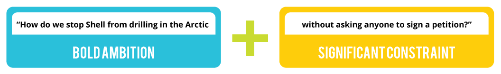

Steps for the Activity
Part 1 Propelling Questions
Propelling Questions tie together a Bold Ambition with a Significant Constraint in the same question. When it comes to idea generation, rarely do we spend enough time formulating the right question but without the right question, we are unlikely to get to breakthrough solutions.
- 10 minutes – Form groups and choose a real world campaign challenge or problem that needs solutions.
- 10 minutes – Individually write two lists, one of your Bold Ambitions and one of your Significant Constraints
- 20 minutes – As a group share your lists and come up with 3 different Propelling Questions that combine an ambition and a constraint
- 20 minutes – Choose your top question and then work together to sharpen it.
- How can we make it more specific?
- How can we create more tension between the ambition and the constraint?
- How could you deny ourselves the one thing that would make it easy to meet the ambition?
- How can we push the ambition or the constraint further?
Part 2 Can/If Thinking
Can If thinking is a subtle shift in language that can have hugely powerful consequences. It’s all too easy when posed with a challenge to find reasons why we can’t do it – we can’t do that because we don’t have the budget, we can’t do that because the ED will never sign it off . But in doing so we close down the conversation and we limit our ability to find solutions to the challenges we face. By starting each sentence with we can do that if……it shifts us into a different mindset, one where its easier to find solutions instead of problems.
- 5 minutes – draw up one of the Can If maps (see image) on a flip chart and write your Propelling Question in the middle.

- 10 minutes - Using the different Pods on the map as prompts, write up as many ideas as you can on Post it notes and stick them on the map. Try to make your ideas as specific and concrete as possible rather than making generalizations.
- 15 minutes – Go round the map and share your ideas with your group clustering any that are similar
- 10 minutes – Choose your top 3 to share back to the rest of the group.
Materials
- Markers
- Post-its
- Flips charts